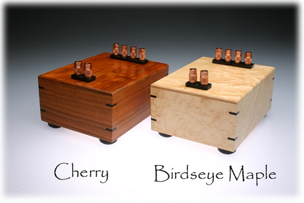

$ 1,140/pair
The ZERO-Box is simply my speaker impedance multiplying autoformer installed
in a beautiful hand crafted lacquer finished in either a solid Cherry or
Birdseye Maple wooden box with
African Ebony wood accents on the four corners. The connections are
available on Cardas binding posts allowing you to use your favorite speaker
cables. The single pair of binding posts are the connections that go to the
speaker. The quad set of binding posts allow you to choose the
multiplication factor depending on which two of the four are connect back to
the amplifier. Polarity passes through the box: Left in-Left out, Right
in-Right out.

Impedance Multiplication
Factors:
2x = Connect the inner pair of the Quad set to the
amplifier
3x = Connect the Left side inner, and Right side outer to
amplifier
4x = Connect the outer pair of the quad set to the amplifier
For example: a 4 ohm speaker can be made to look like a
8,12, or 16 ohm speaker.
|